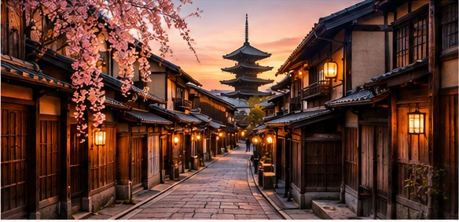
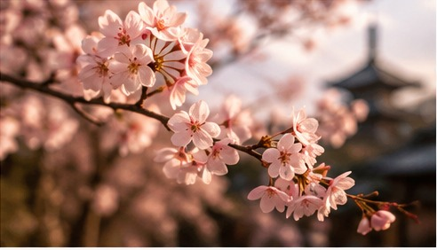
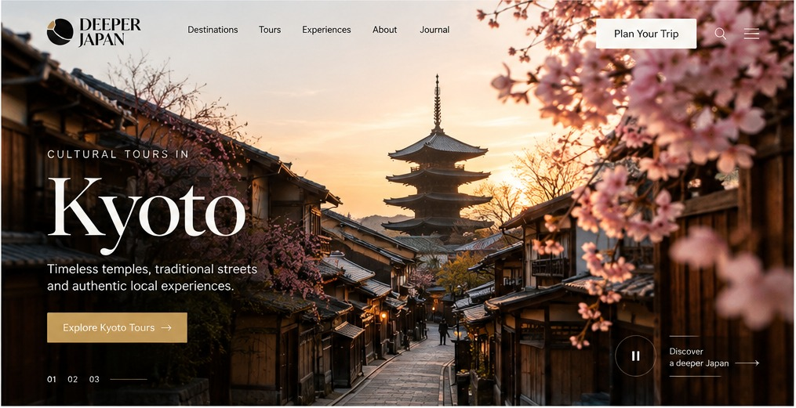
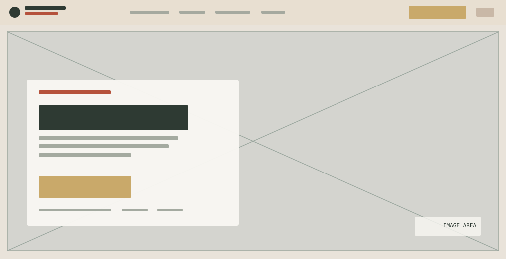

CHAPTER 01 / THE IDEAYOUR IDEA
YOUR IDEA
GOES HERE.
Add the story behind this project.
PROJECT ORIGIN

01 / A SENSE OF PLACEAn editorial travel experience inspired by Kyoto’s historic streets and cherry blossom season.

